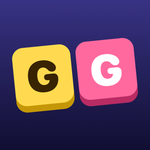

QULT GAMING
Des mots croisés sur le jeu vidéo, de l'arcade des années 80 aux jeux de 2026. Personnages, consoles, studios, jargon de joueur : tout ce qui a fait le jeu vidéo, en grilles.
150 grilles, trois niveaux
Facile, moyen ou difficile, à jouer dans l'ordre que tu veux. Chaque grille finie fait monter ton Level.
Une ambiance par décennie
Arcade et pixels pour les années 80, 16 bits pour les années 90, polygones et Y2K pour les années 2000, blocs pour les années 2010, néons et coucher de soleil pour les années 2020.
Gratuit, ou Premium
La version gratuite affiche une publicité et donne 5 lettres et 2 mots à révéler par grille. Qult Premium, achat unique, retire toute publicité et rend les aides illimitées.
In English
Qult Gaming is a crossword app about video games, from 80s arcades to 2026. 150 puzzles, three levels, one look per decade. Free with ads, or Qult Premium: a one-time purchase that removes all ads and makes hints unlimited.